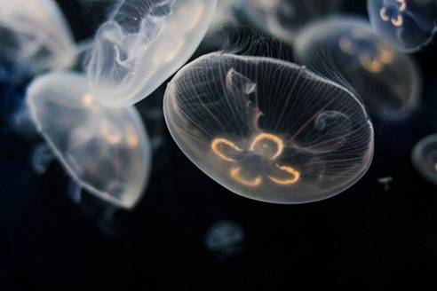
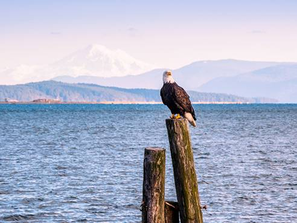

INTERESTING FINDS
Sea
Jellyfish
You can find a variety of Jellyfish along the coast. These moon jellyfish are bioluminesent in the dark.
Starfish
There are plenty of purple and orange starfish along the coast. Find them chilling right on the shore with some barnacles and seaweed.
Land
Bears

British Columbia SkyTrain opened 1985 there are now 53 stations throughout the province. SkyTrain has 79.6 km (49.5 mi) of track and uses fully automated trains on grade-separated tracks running on underground and elevated guideways, allowing SkyTrain to hold consistently high on-time reliability” “SkyTrain is the longest rapid transit system in Canada and the longest fully automated driverless system in the world“. Take the train to Horseshoe Bay to catch the ferry
Bald Eagles
You can find big beautiful Bald Eagles throughout B.C.